Остров "Зеленая роща"
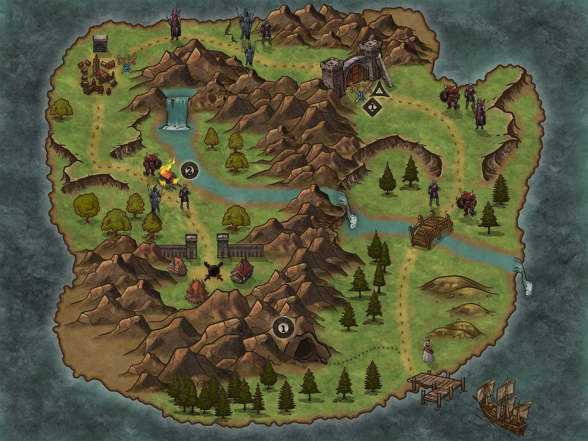Сценарий
На селения напали разбойники, они взяли в плен местного короля, а сам главарь скрывается в замке. Необходимо освободить короля и отвоевать поселения.
Обозначения
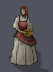Жители. При появлении героя они рассказуют, что здесь произошло и просят о помощи.
Противники
Примечание: Каждый указатель обычных противников на карте подразумевает наличие 1-3 соответсвующих мобов.
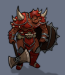Орк-воин.Уникальная способность: Имеет большое здоровье и броню.
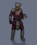Разбойник. Уникальная способность: Кровотечение(периодический урон).
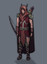Лучник. Уникальная способность: отпрыгивает назад(кульбит), если враг близко.
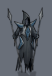"Эльф-маг". Уникальная способность: Смертельный вихрь(периодический урон).
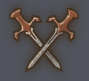"Босс".
-
"Одноухий Джим (Гибберлинг-разведчик)"
- Дальний и ближний бой.
- отпрыгивает назад(кульбит) и бросает гранату в цель.
Рядом:
Разбойники: 2х
Лучники: 1x -
"Косое копыто (Кентавр-тюремщик)"
- прыгает в область и наносит урон(AoE).
- Раскручивается и наносит урон(Периодический, АоЕ).
Рядом:
Разбойники: 2х
Орк-воин: 2x
"Финальный босс".
Большой Билли (Главарь разбойников)
- Кидает кинжалы по направлению взгляда(AoE).
- периодически нападают 1-2 разбойника.
- Впадает в ярость(увеличеный урон), когда мало здоровья.
- Когда мало здоровья призывает отряд разбойников, а сам скрывается пока их не убьют.
Рядом:
Лучники: 2x
Разбойники: 3х
Орк-воин: 2x
Иные указатели
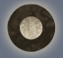"Квест"
1. В пещере можно найти старика, отгадав его загадки можно получить драконье снадобье силы. Загадки отгадываются по принципу "сопоставить".
Где вода столбом стоит? (Колодец)
Белая морковка зимой растет. (Сосулька)
Бежит, бежит — не выбежит. (Река)
Всех кормит, а сама есть не просит. (Земля)
2. Потушить караван водой из реки.
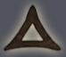"Особое место"
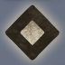"Скриптовое событие"
1.Перед героем закрываются ворота, он попадает в ловушку Одноухого Джима, который со своими бойцами нападает с тыла.
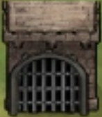"Клетка с королем". Необходима убить тюремщика, забрарать ключи и открыть клетку.